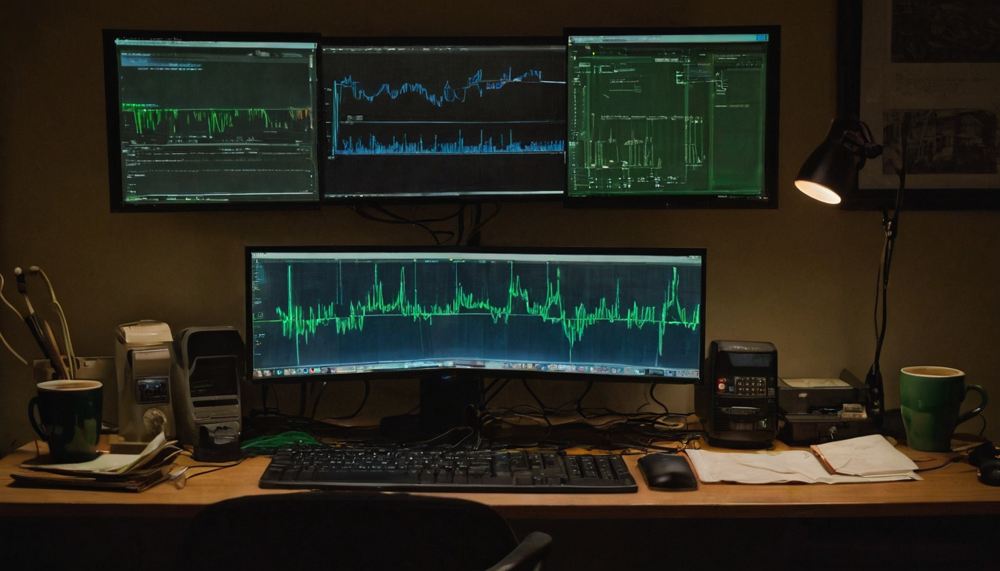
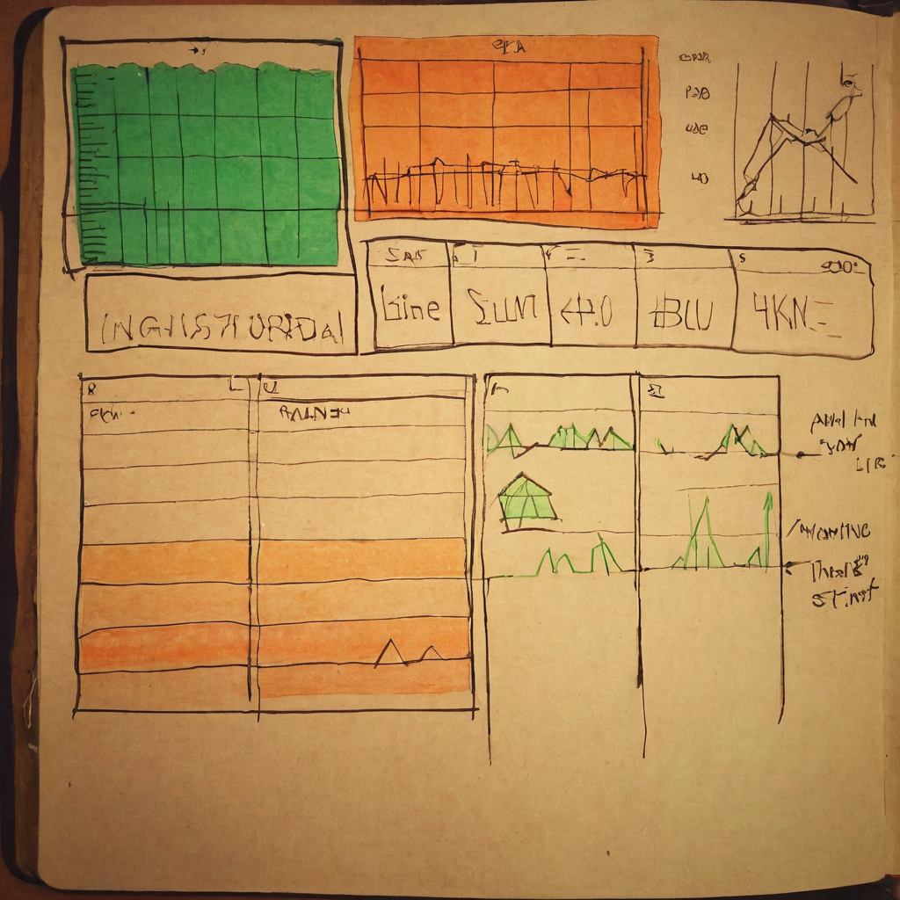

Most of the posts worth writing about are not big announcements. They are small habits that tell you something about where a community's head is at. That is what caught my eye here: a quick note about dollar-cost averaging into XCH, tied to a link for a community analytics dashboard.
@bytesandblocks shared a short post saying that he and @LoganSt66279467 are going to keep DCAing (dollar-cost averaging, meaning buying a fixed amount on a regular schedule instead of trying to time the market). He framed it as the community getting more control, and linked to the analytics section of xch.ninja (xch.ninja/#analytics). The post itself is brief, so most of the context here comes from the link and the framing, not a long explanation.

Chia does not have a huge marketing budget or a hype machine behind it, so a lot of what keeps the ecosystem moving is exactly this kind of thing: individual holders talking openly about their own DCA habits, and community members building or sharing tools that let people see the network for themselves instead of relying on secondhand takes. Community-run dashboards matter for the same reason. When people can look at real data (netspace, price history, farming stats, whatever the specific tool tracks) instead of just vibes, the whole conversation gets more grounded. That is worth encouraging regardless of what any single dashboard shows on a given day.
What it does: Based on the URL, xch.ninja appears to be a community-built site with an analytics section, presumably tracking Chia network or price data. I have not verified every feature it offers, so I am going off the link and the post's framing rather than claiming specifics.
Who it helps: Anyone holding or watching XCH who wants a quick reference point instead of digging through raw block explorer data or scattered posts.
Why it fits the DCA habit: If you are dollar-cost averaging into something, having an easy way to check on network health or price trends over time is a natural companion habit. It turns a passive buying schedule into something a little more informed.
What still needs work: I do not have enough visibility into xch.ninja's data sources, update frequency, or accuracy to vouch for it beyond what is linked. That is a normal thing to check before leaning on any third-party dashboard, Chia or otherwise.
What I would test first: Pull up the analytics page myself and compare a couple of numbers against known sources (official Chia network stats, a major exchange) just to get a feel for how it is put together.
I like seeing this kind of post honestly. Two people saying they are going to keep DCAing is not a headline, but it is the kind of quiet consistency that actually built this space in the first place, and pairing it with a community analytics tool is a good habit. Chia has always had people who would rather build their own dashboard than wait for someone else to hand them one, and that is exactly the energy I want to see more of. I have not spent time in xch.ninja myself yet, so I cannot speak to the details of what it tracks, but I am glad it exists and I plan to take a look.
Worth keeping an eye on whether xch.ninja keeps getting updated and whether more of the community starts referencing it alongside the usual sources. Community tools like this tend to either become genuinely useful reference points or quietly fade, and it is early to say which way this one goes. No predictions here, just something to check back on.
Source: X post by @bytesandblocks, https://x.com/i/web/status/2077489458564231408, Retrieved on 2026-07-15.
External references: xch.ninja analytics page, https://xch.ninja/#analytics